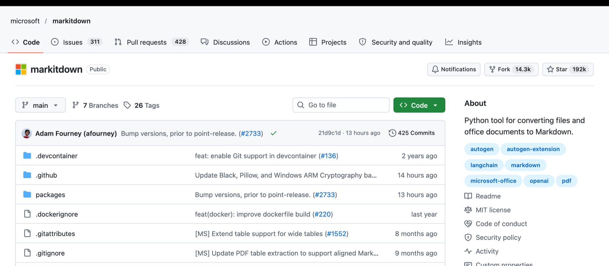
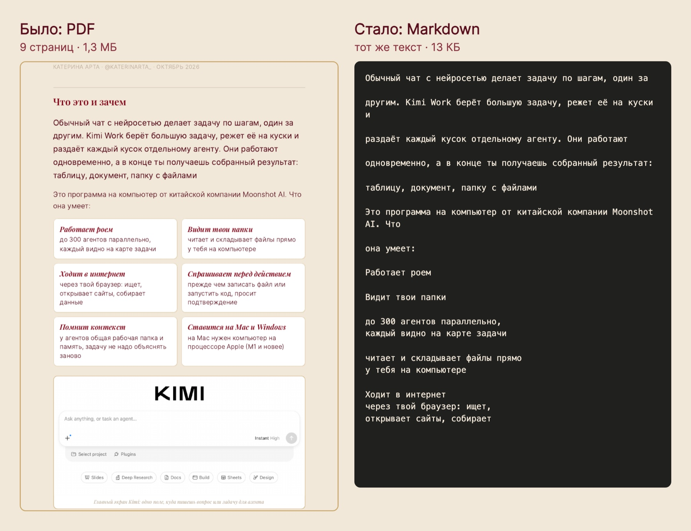

Как перестать сжигать токены на документах
Бесплатный инструмент от Microsoft, который превращает PDF, Word и Excel в чистый текст для нейросети. Почему документ съедает лимит ещё до первого вопроса, сколько на самом деле экономит Markitdown и как подключить его к Claude за пять минут
Куда уходят токены
Когда ты кидаешь в нейросеть PDF, она читает его дважды: вытаскивает текст и вдобавок смотрит на каждую страницу как на картинку. Платишь ты за оба прочтения, даже если в документе один текст без единого графика
Первая цифра из документации Anthropic для Claude. Вторая из замера на Amazon Bedrock: разница в семь раз, и вся она приходится на картинки страниц. Документ на 20-30 страниц съедает десятки тысяч токенов ещё до первого вопроса. Лимит подписки кончается быстрее, а длинный документ вытесняет из памяти чата всё, о чём вы говорили раньше
Что такое Markitdown
Это бесплатная программа от Microsoft с открытым кодом. Она берёт файл и превращает его в Markdown: обычный текст, где заголовки, списки и таблицы сохранены простыми значками. Нейросети этот формат понимают лучше всего, а картинок страниц в нём нет, поэтому токенов уходит в разы меньше
- ДокументыPDF, Word, PowerPoint, Excel, EPUB
- Веб и данныеHTML, CSV, JSON, XML, ZIP-архивы
- Медиакартинки, аудио с расшифровкой, ссылки на YouTube
- Бесплатно навсегдалицензия MIT, работает у тебя на компьютере, файлы никуда не отправляет


Сколько экономит, если честно
В роликах обещают «минус 70%». Своей цифры Microsoft не публикует. Независимые замеры дают от половины до 80% экономии, и всё зависит от документа:
- Текстовые документы (договоры, отчёты, методички, расшифровки) - экономия самая большая, потому что картинки страниц тут чистый расход
- Документы, где смысл в графиках и схемах - экономия есть, но Markitdown график не опишет. Такой файл лучше отдавать нейросети как есть
- Сканы и фото страниц - текста внутри нет, Markitdown вернёт пустоту. Тут нужен отдельный плагин распознавания markitdown-ocr
Как подключить к Claude Code за пять минут
Подключаем через MCP: это способ дать нейросети новый инструмент. Настраивается один раз, дальше Claude сам переводит файл в текст, когда ты просишь его прочитать документ
Поставь uv
Что это. Маленькая программа, которая сама скачает Python нужной версии и Markitdown. Ставить Python руками не придётся
Mac. В Терминале:
curl -LsSf https://astral.sh/uv/install.sh | shWindows. В PowerShell:
powershell -ExecutionPolicy ByPass -c "irm https://astral.sh/uv/install.ps1 | iex"Что увидишь. Строку об успешной установке. Закрой терминал и открой заново
Подключи Markitdown одной командой
Куда вставить. В тот же терминал:
claude mcp add markitdown -- uvx markitdown-mcpЧто это даёт. Claude Code получает инструмент convert_to_markdown, который превращает любой файл или ссылку в текст
Проверь, что всё работает
Куда нажать. Запусти Claude Code, напиши в поле чата /mcp и нажми Enter
Что увидишь. В списке подключений markitdown. Первый запуск занимает около минуты: программа скачивает около 80 своих частей. Дальше запускается сразу
Дай документ
Как просить. Укажи путь к файлу и попроси сначала перевести его в текст:
Что это даёт. Claude читает чистый текст вместо картинок страниц и тратит на документ в разы меньше
Без MCP и в Claude Desktop
Разово, без подключения. После установки uv любой файл переводится в текст одной командой, а готовый .md ты кидаешь в любую нейросеть, хоть в ChatGPT:
uvx --from 'markitdown[all]' markitdown отчёт.pdf -o отчёт.mdClaude Desktop. Открой Настройки → Developer → Edit Config и добавь в файл claude_desktop_config.json:
{"mcpServers": {"markitdown": {"command": "uvx", "args": ["markitdown-mcp"]}}}Если после перезапуска Claude Desktop не видит сервер, замени "uvx" на полный путь к нему. На Mac его покажет команда which uvx в Терминале
Грабли, о которые спотыкаются
- Сканы. Если PDF - это фото страниц, Markitdown вернёт почти пустой файл. Проверь: если текст в PDF нельзя выделить мышкой, это скан
- Сложные таблицы. Объединённые ячейки и таблицы на разворот иногда разъезжаются. Важные цифры сверяй с оригиналом
- Графики пропадают. Markitdown переносит текст, а не смысл картинок. Отчёт, где главное на диаграммах, лучше отдать нейросети целиком
- Первый запуск долгий. Около минуты на скачивание. Это один раз, не поломка
- Только на своём компьютере. Сам Microsoft предупреждает: сервер Markitdown рассчитан на локальную работу. Не открывай его в сеть и не давай ему файлы из непроверенных источников
Источники
github.com/microsoft/markitdown- официальный репозиторий, форматы, установка, лицензия MIT- markitdown-mcp - MCP-сервер и предупреждение о локальной работе
- Документация Claude о PDF - 1 500-3 000 токенов на страницу плюс картинка страницы
- AgentsRoom - замер Amazon Bedrock: 3 страницы PDF около 7 000 токенов против 1 000 в виде текста, июнь 2026
- uv - официальная инструкция по установке
Данные на 22 октября 2026. Команды проверены на Mac
Сэкономить токены - это гигиена, а не система
Я Катерина Арта, продюсер EdTech. Внедряю нейросети в бизнес, контент и продажи. Сама работаю без команды: вместо штата у меня ИИ-помощники, и каждый знает мои правила и продукты
Блог растёт на контент-заводе из ИИ-агентов
Мой блог ведут ИИ-агенты: находят темы, которые уже залетели, пишут сценарии, собирают рилсы с цифровым двойником и выдают материалы по кодовым словам. Я проверяю и принимаю решения


Три рилса по миллиону просмотров и больше, без рекламы и без команды
Растут деньги и аудитория клиентов
Ту же систему из нейросетей я собираю для экспертов: контент, автоворонки, боты, сайты и продажи. Дизайнер, монтажёр, таргетолог, копирайтер и менеджер по продажам в проекте не нанимались, их работу закрыли нейросети
Подключить Markitdown - пять минут. Понять, какую работу в твоём бизнесе отдать нейросетям, чтобы лимит уходил на результат, а не на перечитывание документов, - это уже работа над твоим бизнесом
На консультации разбираю твои продукты и неделю и собираем план: какие задачи забирают нейросети и с какой начать завтра
Напиши слово
мне в личку Telegram
НаписатьМои каналы и страницы